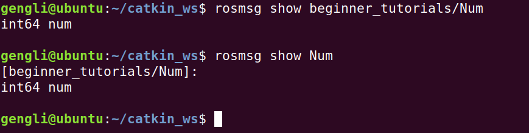

第六节 ROS rosmsg
这一节介绍 msg 文件，在之前的内容中提过 Topics，又说过 Messages，msg 文件就是来描述 msg 是什么样的，很像 C 语言中的结构体。
1. 样例
一个 msg 文件的样例如下：
Header header
string child_frame_id
int64 A
int64 B
geometry_msgs/PoseWithCovariance pose
geometry_msgs/TwistWithCovariance twist
每行两部分，左边是类型，右边是名字，和C语言等很像。
2. 创建 msg 文件
2.1 创建 Num.msg
下面我们来写一个 msg 文件并用出来。msg 文件我们放在 package 下的 msg/ 文件夹里。
cd ~/catkin_ws/src
roscd beginner_tutorials
mkdir msg
echo "int64 num" >> msg/Num.msg
这时已经在 msg/ 文件夹下创建了一个名为 Num.msg 的文件，内容为
int64 num
当然上面步骤也可以自己打开个编辑器，写好保存成文件。
下面，怎么让 ROS 知道我们写的这个 Num.msg 呢？
2.1 修改 package.xml
在 beginner_tutorial/ 文件夹下，修改 package.xml，确保 取消了下面两行的注释：
<build_depend>message_generation</build_depend>
<exec_depend>message_runtime</exec_depend>
2.2 修改 CmakeLists.txt
打开 CMakeLists.txt 文件，在 add_package() 里面加入 message_generation，最终 add_package() 的内容如下：
## Find catkin macros and libraries
## if COMPONENTS list like find_package(catkin REQUIRED COMPONENTS xyz)
## is used, also find other catkin packages
find_package(catkin REQUIRED COMPONENTS
roscpp
rospy
std_msgs
message_generation
)
继续找到 catkin_package() ，确保有 CATKIN_DEPENDS message_runtime 这一行，其他几行如果被注释掉的话也取消注释，最终如下：
###################################
## catkin specific configuration ##
###################################
## The catkin_package macro generates cmake config files for your package
## Declare things to be passed to dependent projects
## INCLUDE_DIRS: uncomment this if your package contains header files
## LIBRARIES: libraries you create in this project that dependent projects also need
## CATKIN_DEPENDS: catkin_packages dependent projects also need
## DEPENDS: system dependencies of this project that dependent projects also need
catkin_package(
INCLUDE_DIRS include
LIBRARIES beginner_tutorials
CATKIN_DEPENDS roscpp rospy std_msgs message_runtime
DEPENDS system_lib
)
继续找到 add_message_files() 在里面取消注释，添加内容，最终如下：
## Generate messages in the 'msg' folder
add_message_files(
FILES
Num.msg
)
最后，还要找到 generate_messages()，取消注释，最终效果如下：
generate_messages(
DEPENDENCIES
std_msgs
)
2.3 显示 msg
此时，依次输入：
rosmsg show beginner_tutorials/Num
rosmsg show Num
可以看到如下输出：

3. 总结
以上便是 rosmsg 相关的一些内容，需要修改的地方其实就是 package.xml 和 CmakeLists.txt 两个文件，刚开始觉得比较麻烦，熟练了其实也很简单，而且每个工程改一次就可以了。更多关于 rosmsg 内容可以用命令
rosmsg -h
来查看。下一节讲的 rossrv 其实和本节讲的 rosmsg 非常相似。具体看下一节 rossrv。